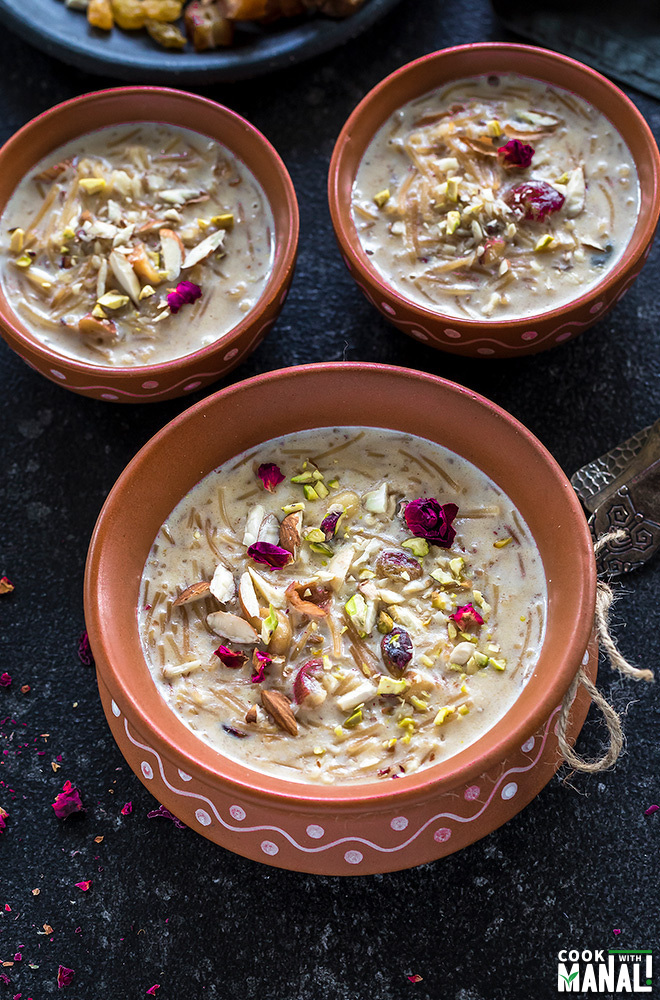
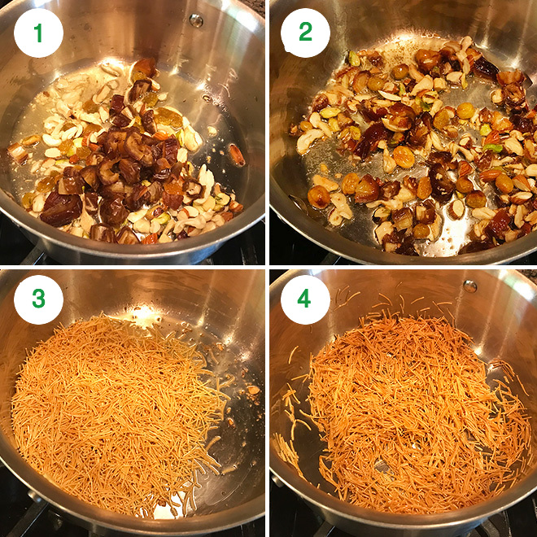
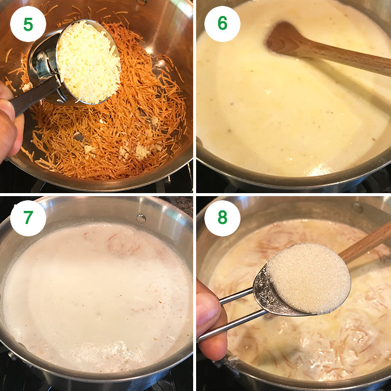
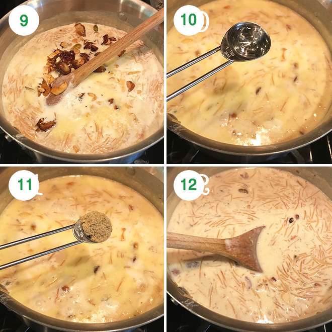

1. One of the most important things here is to use whole milk. If you use fat-free or 1% milk, the result won’t be the same. So please use whole milk for this recipe.
2 The pudding really thickens as it cools down, so I suggest adding a little milk before serving. It’s a personal choice anyway, if you like it thick then just let it be.
3. Be careful on the amount of sugar in this recipe. Dates and raisins also add to the sweetness so start adding 1 tablespoon at a time and then add more as needed.
4. You really need to use lots of nuts and dried fruits in Sheer Khurma but the most important one is dates. You cannot miss it!
5. Add khoya (dried milk solids) to make it richer and more flavorful. It’s optional but recommended.
6. Consistency of sheer khurma is a personal preference. I like mine thick. If you prefer a thinner khurma, use only 3/4 cup of vermicelli in stead of 1 cup as mentioned in the recipe and use more milk.

1- Heat ghee in a pan on medium heat. Once hot, add the chopped nuts, raisins and dates to the pan.
2- Cook for 1-2 minutes until the nuts are fragrant and turn golden brown. The raisins will plump up. Remove the nuts from the pan and set them aside.
3- Now to the same pan, add the seviyan (vermicelli) and mix well.
4- Roast the seviyan for around 3 minutes until it starts becoming a light golden brown in color.

5- Now add the khoya/mawa and roast for another 1-2 minutes. This step is optional, you may skip it.
6- Next add the milk to the pan and stir. Increase heat to medium high and let the milk come to a boil. Stir often in between so that vermicelli doesn’t stick to the bottom of the pan.
7- Once the milk comes to a boil, lower the heat to medium and let is boil for around 8 minutes.
8- After 8 minutes, the milk will reduce and thicken slightly, at this point add in the sugar and mix.

9- Transfer back the fried nuts into the pan and mix.
10- Also add the rose water and mix.
11- And also the cardamom powder.
12- Cook for 2-3 more minutes on medium-low heat and then turn off the heat.

Serve Sheer Khurma warm or chilled. I love it cold!